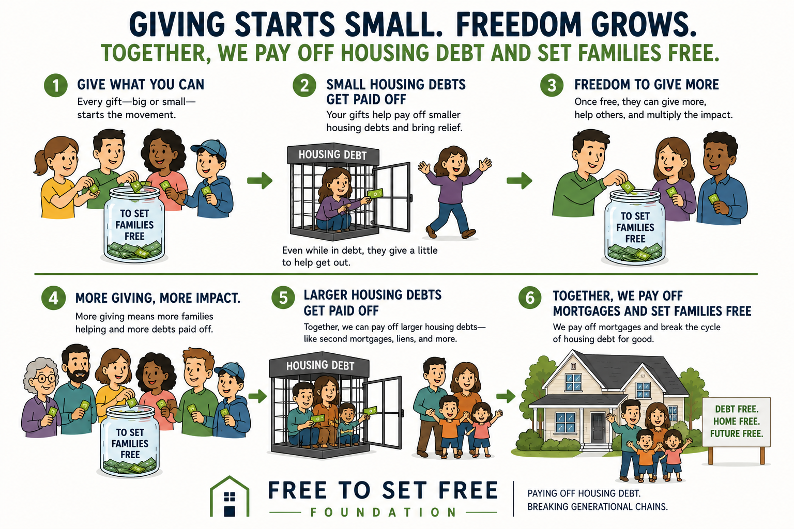

About Us
Financial freedom that multiplies through the Body of Christ.
Who We Are
Freedom received. Freedom shared.
The Free to Set Free Foundation helps create financial freedom by providing education on Kingdom Wealth Principles, coordinating community service projects to help people in need, and by helping people escape the burden of mortgage debt in such a way that today's recipient becomes tomorrow's donor.

Contact us at freedom@freetosetfree.org.